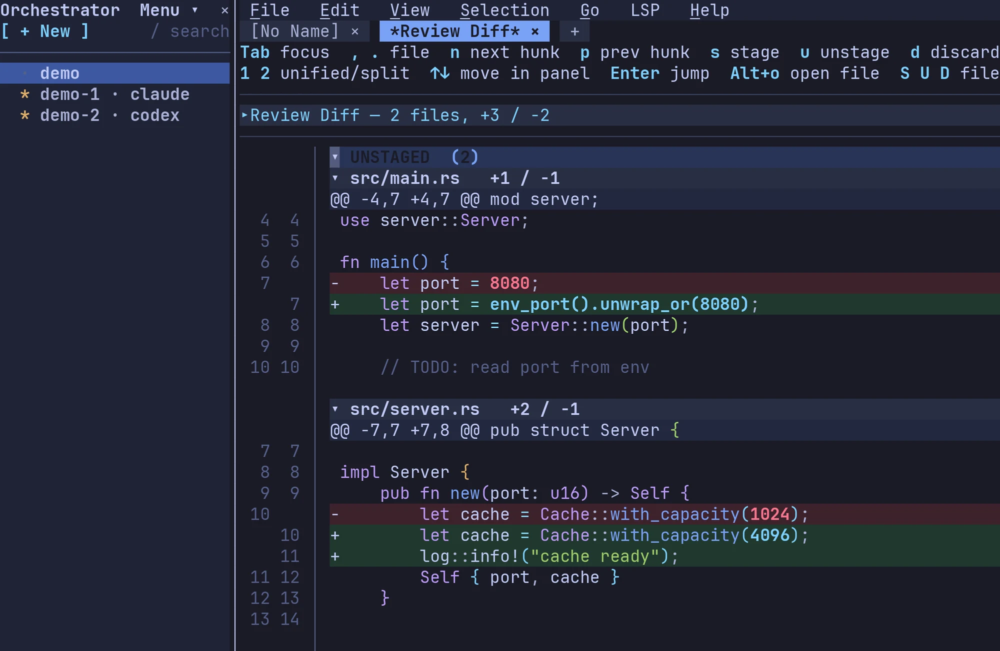

Every task gets its own workspace.#
Each task gets its own git worktree, with its own tabs, terminals and agent. Hop between tasks with an arrow key while the rest keep working.
An agent, right beside your code.
Put claude, codex or opencode to work in any workspace. Restart Fresh and the sessions pick up where they left off.
Every change, ready to review.
Branch, diff and PR status sit in the dock. Review hunk by hunk: stage, unstage, discard, and leave notes as you go.
Here, or anywhere.
Workspaces run on this machine, on any host in your ~/.ssh/config, in Kubernetes or in a dev container. On a remote, Fresh cuts the worktree right there.
Agents that drive the editor.#
Fresh's command line is built for agents as much as for you. Let an agent use it and it can organize your workspaces into folders, start new sessions, wait on other agents, split panes and open files for you to look at. Only the agents you allow get the key, and they learn the ropes from fresh --skill.

- Hunk-level stage / unstage / discard
- Side-by-side diff view
- Line comments and review notes, exported to Markdown
- Git gutter, git log viewer, git grep
Familiar from the first keystroke.#
Ctrl+S saves. Ctrl+C copies. Click, drag, scroll. If you have used a modern editor, you already know how to use Fresh. There are no modes to learn and no cheat sheet to keep open.
- Menus and a command palette for everything, one shortcut away
- Multi-cursor editing, macros, regex search & replace
- Vim mode, if that is how you think
Make it yours.#
Browse the themes and the whole editor changes as you go. Tokyo Night, Gruvbox, Dracula, Nord and more are built in, and the theme editor works live.
- A status bar you arrange yourself, clock included
- Rulers, whitespace, rainbow brackets, per-language wrap
- In Japanese, Korean, Chinese, Vietnamese and more
Settings, not config files.#
Every option lives in one settings editor, with its description and its default right beside it. There are no dotfiles to hunt down and no syntax to get wrong.
- Press
/to search every setting - A keybinding editor that catches conflicts
- Plugin settings, in the same place
Two gigabytes. Unbothered.#
Open a multi-gigabyte log and the editor stays responsive: jump to the last line and keep scrolling. Startup is instant and memory stays small, even over SSH.
- Multi-GB files open without blocking the UI
- SSH saves send only the diff
- Search & replace across the project, unsaved buffers included
Extend it in TypeScript.#
Plugins are written in TypeScript and run sandboxed inside the same single binary, with no node_modules on disk. Language packs bring a grammar, settings and LSP config in one install.
- An API for buffers, splits, cursors, processes and overlays
- Your own keybinding modes and embedded terminals
- Start a new package with
--init
Many servers, one editor.#
Run several LSP servers per language (pylsp and pyright, say) with feature routing and merged completions. Workspace roots come from markers like Cargo.toml or package.json.
- Configs for Python, TypeScript, Rust, Go, Java, C/C++, Ruby and many more
- Goto, references and hover in library paths
- Code actions with workspace edits
Detach, come back.#
Start a named daemon and reattach across terminal disconnects. --wait makes Fresh your $EDITOR; Hot Exit keeps every buffer across restarts and crashes.
Remote files, close at hand.#
Open files on an SSH host with fresh user@host:path. It reconnects in the background, and saves to large files send only the patch.
Ready in one line.#
One static binary, no runtime. Pick your platform, or see even more options.
Linux / macOS (quick install)#
curl -fsSL https://raw.githubusercontent.com/sinelaw/fresh/refs/heads/master/scripts/install.sh | sh
One-line install. No toolchain required.
macOS (Homebrew)#
brew install fresh-editor
Windows (winget)#
winget install fresh-editor
npm / npx (no install)#
npx @fresh-editor/fresh-editor
Or global: npm install -g @fresh-editor/fresh-editor
Pre-built Binaries#
Linux, macOS, Windows, FreeBSD binaries on
GitHub Releases. Drop anywhere on $PATH.
And so much more.#
- Multi-GB file support
- Intuitive out of the box
- No config file fiddling required
- Standard keybindings (Ctrl+S, Ctrl+Z, Ctrl+F)
- Full mouse support
- Menu bar and command palette
- Fuzzy file finder (Ctrl+P)
- Project-wide grep (live, via ripgrep)
- Project-wide search & replace
- File explorer with git status
- Tabs and split panes
- Orchestrator dock: one workspace per git worktree
- Coding agents per workspace (claude, codex, opencode)
- Remote workspaces over SSH, Kubernetes and dev containers
- An agent-facing CLI (
fresh --cmd,fresh --skill) - Agent sessions that resume after a restart
- Side-by-side diff view
- Markdown preview (compose mode)
- Multi-cursor & block selection
- Keyboard macros
- Regex find & replace with capture groups
- Auto-close brackets & quotes (per-language)
- Smart home, smart backspace dedent, surround
- Auto-indent & auto-dedent (tree-sitter)
- Code folding (LSP + indent-based)
- Magit-style git diff review
- Git gutter, git log viewer, git grep
- LSP configs shipped for many languages
- Multi-LSP per language
- Goto / hover / references in library paths
- Code actions with workspace edits
- Format-on-save
- SSH remote editing
- Detachable daemon (
fresh -a) --waitforgit core.editor/$EDITOR- Hot Exit with crash recovery
- Integrated terminal (mouse forwarding, scrollback)
- Vim mode
- TypeScript plugins (QuickJS + OXC)
- Package manager for plugins, themes, languages
- Scaffold new packages with
--init - Live-preview theme editor
- Built-in themes: Gruvbox, Dracula, Nord, Tokyo Night…
- Vertical rulers, whitespace indicators
- Customizable status bar with
{clock}element - Internationalization (Japanese, Korean, Chinese, Vietnamese…)
- Many text encodings (UTF-16, GBK, Shift-JIS, Latin-1…)
- Read-only mode for library & toolchain paths
- Settings UI with deep search
- Keybinding editor with conflict detection
- Single static binary, no runtime
- Packaging: Homebrew, AUR, winget, apt, Flatpak, AppImage, cargo
- Linux, macOS, Windows, FreeBSD
- Open source (GPL-3.0-or-later)
In their own words.#
how come nobody is talking about [Fresh] … by far the best terminal-based ADE/orchestration tool i've used so far 🔥🔥🔥
FINALLY A TERMINAL EDITOR THAT WORKS AND LOOKS GOOD AND IT WORKS LIKE EDIT.COM BUT LIKE VSCODE AND IT'S NOT A HOTKEY GALORE WHERE YOU NEED A SEPARATE BRAIN TO LEARN HOW TO USE IT OH MY GOD I WAS ABLE TO COPY AND PASTE LIKE A NORMAL PERSON
— u/darkguy2008, r/CLI
A new code editor, and it looks good! It's called Fresh and it's an alternative to Vim and Nano. 100% in the terminal. Built in Rust, so it flies.
— Miguel Ángel Durán (@midudev), X — translated from Spanish
Out of the box this is the best new TUI editor I've tried, probably ever. … you really nailed the discoverability / accessibility — basically everything works intuitively and needs very little explanation.
— 20after4, Hacker News
So this absolutely the most amazing terminal IDE I have ever seen or used! I'm really amazed that it's not heavy on key bindings so you don't have to be an expert in Vim or Emacs to get around the application. It works just like a GUI application with mouse integration. Wow totally impressed!
— u/Salemx27x, r/CLI
I used to work with Micro, Nice Editor, or Tilde, but now Fresh is the best text editor i have ever seen!
— marco-trovato, GitHub
It's fast, cross-platform and, unlike Vim or Emacs, you don't need to learn complicated commands. It's intuitive like VS Code… it even recognises the mouse, and I installed it with a single npm command. 🤯
— Fazt (@FaztTech), X — translated from Spanish
Omg I am using your ide for like 1.5+ months atp! Such an amazing cli code editor! I was looking for a cli alternative to vscode and this is honestly great.
— u/colmehurze, r/CLI
It has actually replaced both Sublime and VSCode as my IDE of choice on my laptop. I got tired of the fan running full speed when I wanted to work on a project.
— rkram5424, GitHub
I'm really impressed with Fresh, a terminal text editor that you can just use.
— DistroTube, YouTube
This is incredible and really fills a niche: an editor that feels and works like a GUI, but works in terminal. It's so nice to be able to switch from GUI to terminal and be able to retain the same mechanics and intuition. … for everyone who mostly lives in the GUI (which is most people now), this is a godsend.
— u/JumpingJack79, r/commandline
I had given up hope on ever finding an editor like this. Just did a little bit of browsing in a current project and WOW.
— rglover, Hacker News
There haven't really been any [new text editors] that made me go, “Yeah, I want to switch to that,” in a long time. I think fresh might be the one that I would really think about switching to.
— Awesome Open Source, YouTube
The thing is sick! First editor ever to make me actually switch from nano.
— u/diacid, r/CLI
Thank you for a amazing terminal editor. Something that I felt was truly lacking in the modern age. Even though its unintended it's the perfect editor if you have mobility issues or are missing a limb. No need for weird vim/emacs bindings all over the keyboard making it hard to use.
— EliteAMDGamer, GitHub
man... i'm blown away, this project is so insane i had to personally congratulate you guys for it, it's simply fantastic
— eusebioleite, GitHub
Ive tried maybe every terminal editor attempting it to works like simple IDE, no luck :) so thank you pretty much for delivering this great stuff 🔥🔥🔥
— u/kisdmitri, r/CLI
The multi-cursor experience is the smoothest I've seen in a terminal based editor. Congrats!
— yoavm, Hacker News
Thank goodness for a terminal editor that behaves like a proper editor should. No silly mode, no weird key bindings, function keys even behave as expected and the mouse works if you have one.
— shartrec, GitHub
This is insane, love this project so much! Is now my main
— u/Ok_Trifle3308, r/commandline
i REALLY love this thing, especially the efficiency and speed (phenomenal!). gonna start using it daily.
— winterrdog, Hacker News
I love this editor. I'm looking to wean myself off vscode. Also the text based animations are *chefs-kiss*. Makes using the computer feel like the good old days.
— u/Virtual-Spring-5884, r/CLI
I really enjoy the command palette, the open file menu and the multi cursor. It's well thought, really intuitive so far and I definitively will use it regularly.
— az09mugen, Hacker News
I've been using it for over a month. It's getting better at each update. I've made an alias to replace nano with fresh
— u/not-them, r/CLI
Thanks for the great project, I've been waiting for a fully-featured and modern terminal text editor, and I've really, really enjoyed using fresh so far.
— long-live-yossarian, GitHub
i have been searching for something like this for weeks. thanks a lot for developing this. … can't wait to see this becoming more popular and even contributing to it where i can. kudos to you!
— u/Ropl, r/commandline
I have to say... I really like it. I was settled on NVim and VSCode … Everybody loves fast and responsive software, what can I say.
— desireco42, Hacker News
It works like a GUI editor but runs in your terminal.
— Sourav Rudra, It's FOSS
Been using fresh to edit some scripts across multiple VM's in my homelab the past few weeks and loving it so far! Been able to get hours and hours of usage with no hiccups. Hotkeys for fresh also feel pretty intuitive!
— u/Thebareassbear, r/CLI
I'm very impressed by the Fresh editor. I have a feeling this will very quickly become my favorite command line text editor!
— TobberH, GitHub
Fresh is well suited for you if you want modern editor conveniences and features like file explorers, split views, and LSP support without switching to a GUI editor. Give Fresh a try.
— Haroon Javed, Make Tech Easier
I just used this piece of software and I loved it. Good work sinelaw. It has real good potential esp. for people who want to shift towards working with TUI as their primary interface than say using a GUI.
— u/let_us_reddit, r/commandline
It is really awsome. Never imagine I would be able to use vscode inside a terminal 😆
— goutou1994, GitHub
What sets it apart from similar applications is that it targets developers who want IDE-style functionality while remaining entirely inside the terminal.
— Bobby Borisov, Linuxiac
Iam using your IDE on a daily basis for fun personal projects and learning. I love it. … I was looking for something efficient and not too heavy on the system + with some style.
— u/Classic-Weakness-788, r/commandline
Wow, the console editor I have been looking for for SO long, thank you!
— jetpax, GitHub
This has to be one of the best text editors that probably saved me for my upcoming semesters.
— VA-Valtorious, GitHub
Great work! This should have been made years ago.
— u/Suspicious_Selfy, r/commandline
This was the last blocker to making fresh my daily driver!
— steve-price-immybot, GitHub
I really like your code editor, because I wanted something that works out of the box and is also in the terminal (since I use it a lot).
— X3NON-11, GitHub
Really nice project! I very dislike modal editors, but I'm forced to use them since they are the only available editors in terminal.
— hkalbasi, GitHub
Just started using fresh and i love it, keep up the good work.
— Fegsav, GitHub
I wanted a list of all the cool things people are doing with Fresh (LOVE this editor).
— sottey, GitHub
Some tools simply get out of your way.
FreshThe terminal IDE, refined.
Free and open source · Linux · macOS · Windows · FreeBSD